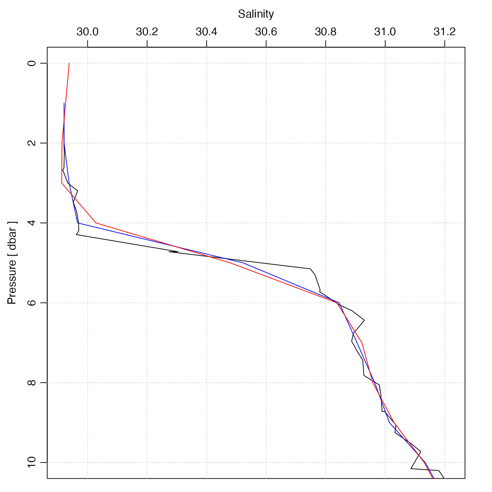

Interpolate a CTD profile to specified pressure values. This is used
by sectionGrid(), but is also useful for dealing with individual
CTD/bottle profiles.
Usage
ctdDecimate(
x,
p = 1,
method = "boxcar",
rule = 1,
e = 1.5,
na.rm = FALSE,
debug = getOption("oceDebug")
)Arguments
- x
a ctd object.
- p
pressure increment, or vector of pressures. In the first case, pressures from 0dbar to the rounded maximum pressure are used, incrementing by
pdbars. If a vector of pressures is given, interpolation is done to these pressures.- method
the method to be used for calculating decimated values. This may be a string specifying the method, or a function. In the string case, the possibilities are as follows.
"boxcar"(based on a local average)"approx"(based on linear interpolation between neighboring points, usingapprox()with theruleargument specified here)"approxML"as"approx", except that a mixed layer is assumed to apply above the top data value; this is done by setting theyleftargument toapprox(), and by calling that function withrule=c(2, 1))"lm"(based on local regression, withesetting the size of the local region);"rr"for the Reiniger and Ross method, carried out withoce.approx();"unesco"(for the UNESCO method, carried out withoce.approx().
On the other hand, if
methodis a function, then it must take two arguments, nameddataandparameters. The first is set tox@databyctdTrim(). The second is passed directly to the user's function (see Example 2). The return value from the function must be a logical vector of the same length as thepressuredata, with TRUE values meaning to keep the corresponding entries of thedataslot.- rule
an integer that is passed to
approx(), in the case wheremethodis"approx". Note that the default value forruleis 1, which will inhibit extrapolation beyond the observed pressure range. This is a change from the behaviour previous to May 8, 2017, when aruleof 2 was used (without stating so as an argument).- e
is an expansion coefficient used to calculate the local neighbourhoods for the
"boxcar"and"lm"methods. Ife=1, then the neighbourhood for the i-th pressure extends from the (i-1)-th pressure to the (i+1)-th pressure. At the endpoints it is assumed that the outside bin is of the same pressure range as the first inside bin. For other values ofe, the neighbourhood is expanded linearly in each direction. If the"lm"method produces warnings about "prediction from a rank-deficient fit", a larger value of"e"should be used.- na.rm
logical value indicating whether to remove NA values before decimating. This value is ignored unless
methodisboxcarin which case it is passed tobinMean1D()which does the averaging. This parameter was added in February 2024, and the behaviour ofctdDecimate()prior that date was equivalent tona.rm=FALSE, so that is the default value, even though it is expected that many uses will find using TRUE is more convenient. Seehttps://github.com/dankelley/oce/issues/2192for more discussion.- debug
an integer specifying whether debugging information is to be printed during the processing. This is a general parameter that is used by many
ocefunctions. Generally, settingdebug=0turns off the printing, while higher values suggest that more information be printed. If one function calls another, it usually reduces the value ofdebugfirst, so that a user can often obtain deeper debugging by specifying higherdebugvalues.
Value
A ctd object, with pressures that are as set by
the "p" parameter and all other properties modified appropriately.
Details
The "approx" and "approxML" methods may be best for bottle data,
in which the usual task is
to interpolate from a coarse sampling grid to a finer one. The distinction
is that "approxML" assumes a mixed-layer above the top sample value. For CTD data, the
"boxcar" method may be the preferred choice, because the task is normally
to sub-sample, and some degree of smoothing is usually desired. (The
"lm" method can be quite slow, and its results may be quite similar to those of the
boxcar method.)
For widely-spaced data, a sort of numerical cabeling effect can result when density is computed based on interpolated salinity and temperature. See reference 2 for a discussion of this issue and possible solutions.
A note about flags
Data-quality flags contained within the original object are ignored by this
function, and the returned value contains no such flags. This is because such
flags represent an assessment of the original data, not of quantities derived
from those data. This function produces a warning to this effect. The
recommended practice is to use handleFlags() or some other means to
deal with flags before calling the present function.
References
R.F. Reiniger and C.K. Ross, 1968. A method of interpolation with application to oceanographic data. Deep Sea Research, 15, 185-193.
Oguma, Sachiko, Toru Suzuki, Yutaka Nagata, Hidetoshi Watanabe, Hatsuyo Yamaguchi, and Kimio Hanawa. “Interpolation Scheme for Standard Depth Data Applicable for Areas with a Complex Hydrographical Structure.” Journal of Atmospheric and Oceanic Technology 21, no. 4 (April 1, 2004): 704-15.
See also
The documentation for ctd explains the structure of CTD objects, and also outlines the other functions dealing with them.
Other things related to ctd data:
CTD_BCD2014666_008_1_DN.ODF.gz,
[[,ctd-method,
[[<-,ctd-method,
argo2ctd(),
as.ctd(),
cnvName2oceName(),
ctd,
ctd-class,
ctd.cnv.gz,
ctdFindProfiles(),
ctdFindProfilesRBR(),
ctdRaw,
ctdRepair(),
ctdTrim(),
ctd_aml_type1.csv.gz,
ctd_aml_type3.csv.gz,
d200321-001.ctd.gz,
d201211_0011.cnv.gz,
handleFlags,ctd-method,
initialize,ctd-method,
initializeFlagScheme,ctd-method,
oceNames2whpNames(),
oceUnits2whpUnits(),
plot,ctd-method,
plotProfile(),
plotScan(),
plotTS(),
read.ctd(),
read.ctd.aml(),
read.ctd.itp(),
read.ctd.odf(),
read.ctd.odv(),
read.ctd.saiv(),
read.ctd.sbe(),
read.ctd.ssda(),
read.ctd.woce(),
read.ctd.woce.other(),
setFlags,ctd-method,
subset,ctd-method,
summary,ctd-method,
woceNames2oceNames(),
woceUnit2oceUnit(),
write.ctd()
Examples
library(oce)
data(ctd)
plotProfile(ctd, "salinity", ylim = c(10, 0))
p <- seq(0, 45, 1)
ctd2 <- ctdDecimate(ctd, p = p)
lines(ctd2[["salinity"]], ctd2[["pressure"]], col = "blue")
p <- seq(0, 45, 1)
ctd3 <- ctdDecimate(ctd, p = p, method = function(x, y, xout) {
predict(smooth.spline(x, y, df = 30), xout)$y
})
lines(ctd3[["salinity"]], ctd3[["pressure"]], col = "red")
